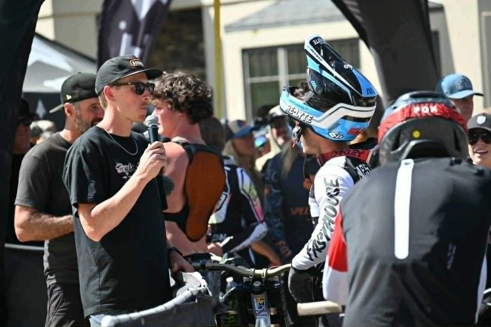
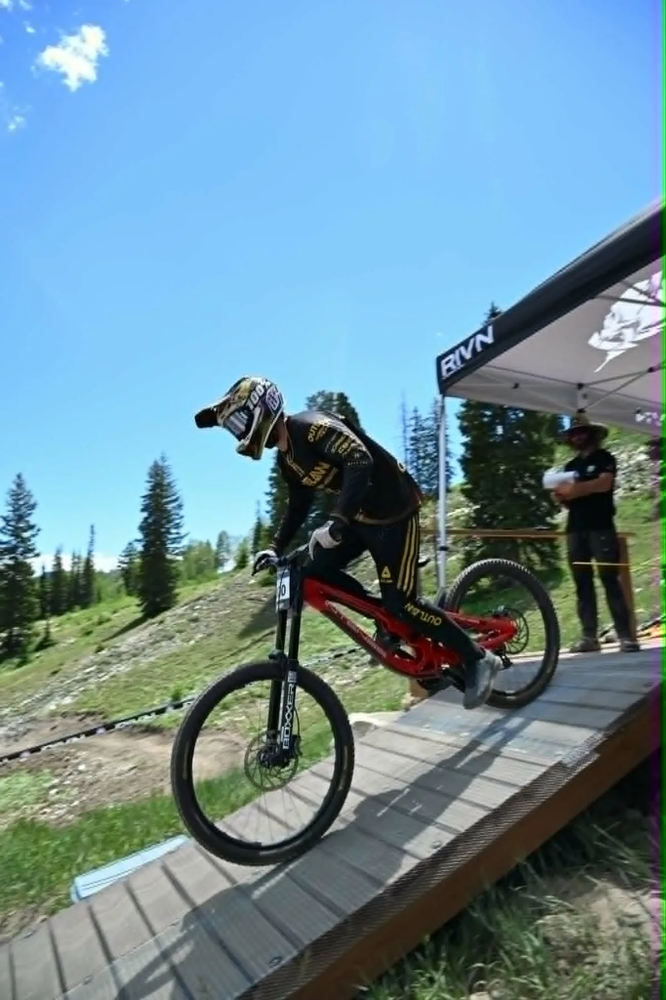

Turnkey live broadcast for real-world events
From camera to finish line. We deliver live.
Down The Wire Productions builds scalable live productions for mountain sports, motorsports, outdoor events, and brand activations—from field infrastructure and camera crews to replay, graphics, commentary, streaming, and venue screens.

Featured ProductionMountain States Cup
Course-wide coverage built for the mountain.
Multi-camera live production, commentary, graphics, sponsor visibility, venue screens, and field infrastructure.
Live BroadcastField InfrastructureReplay & GraphicsAudio & CommsVenue ScreensShow Builds
Network experience. Independent execution.
Down The Wire combines the standards of professional television with a flexible production model built for events that do not fit neatly inside a traditional venue.
Production experience supporting ESPN · ABC · CBS · FOX · NBC · Altitude · PAC-12 · Big 12
What we build
One production partner from planning through final delivery.
Bring us in for the complete show or use Down The Wire to solve the technical and operational gaps inside an existing production.
Live Broadcast Production
Polished multi-camera coverage for digital audiences, venue screens, partners, and post-event content.
- Live switching and streaming
- Replay and highlight workflows
- Graphics and sponsor inventory
- Commentary and host integration
Event Production & Crew
Experienced people and practical on-site leadership where timing, communication, and reliability matter.
- Technical direction and producing
- Camera operators and utilities
- Audio, comms, and EIC support
- Setup, show operation, and strike
Systems, Gear & Consulting
Production design for events that need the correct signal flow, equipment, and deployment plan before show day.
- Camera and switcher systems
- Fiber and network planning
- Audio, comms, and monitoring
- Prebuilt rental show packages

Featured case study
A complete downhill broadcast in a demanding environment.
The Mountain States Cup production connected the start gate, the course, commentary, timing, graphics, venue screens, sponsors, and the online audience through one coordinated workflow.
23Camera sources supported in the live workflow
3,300 FTVertical mountain course environment
LIVE + VENUEStreaming and on-site audience delivery
END TO ENDPlanning, deployment, show, and strike
Inside the production
Coverage designed around the event—not a studio.
Every camera position, signal path, crew assignment, and audience touchpoint is planned around what actually happens on site.



How we work
A practical process for complicated live events.
Every plan is built around the venue, audience, production goals, sponsor needs, and resources already available.
Scope
Define the event, platforms, site limitations, audience, partners, and desired production level.
Design
Build the camera plan, signal flow, crew structure, graphics, audio, comms, and infrastructure.
Deploy
Install, test, rehearse, and prepare the system so the production is ready before the action begins.
Deliver
Run the live show, support the venue experience, strike efficiently, and create post-event assets.
Start a project
Tell us what the event needs to become.
Share the basics and we will begin shaping the right production plan—whether that means a full turnkey broadcast or targeted support inside your existing workflow.
We review the event, location, audience, and production goals.
We identify the camera, crew, graphics, audio, comms, and infrastructure needs.
We follow up with questions and a project-specific starting point.